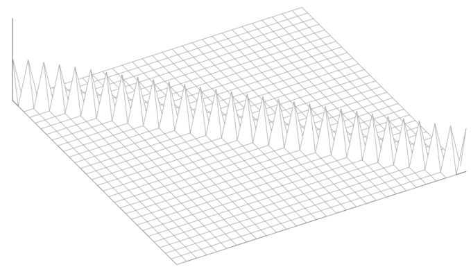

L2正则化（岭回归）
这里，我们从数学原理的角度，分别解释L2和L1正则化。
L2正则化 (Ridge Regression) 是一种非常常用且有效的技术，它选择参数向量θ的L2范数的平方作为复杂度的惩罚项： Ω(θ)=∥θ∥22=i=1∑dθi2 这个惩罚项的直观意义是，它偏好那些参数值较小的模型。一个模型的参数值普遍较小，意味着模型对输入的微小扰动不那么敏感，通常更为“平滑”，泛化能力也更强。
最小二乘法+L2正则化
让我们通过经典的最小二乘法 (Least Squares) 来理解这一思想。在线性回归中，我们试图找到一个参数向量θ，使得模型的预测值Xθ与真实标签y之间的平方误差最小： θ^=argθ∈Rdmin∥Xθ−y∥22 其中，X是一个n×d的数据矩阵，代表n个样本和d个特征。当数据矩阵X列满秩时，这个问题有一个唯一的解析解：θ^=(X⊤X)−1X⊤y。 然而，当特征维度d开始接近甚至超过样本数量n时，问题就出现了。在这种高维场景下，模型具有极高的自由度，它能够轻易地找到一组参数，使得训练误差趋近于零。但这通常是一种“虚假”的拟合，模型学到的是训练数据的噪声而非潜在规律，导致其在测试数据上表现极差，这正是过拟合的典型表现。 为了解决这个问题，我们将L2惩罚项加入到最小二乘的目标函数中，我们便得到了L2正则化的最小二乘法，通常也被称为岭回归 (Ridge Regression)：
θ^=argθ∈Rdmin误差项∥Xθ−y∥22+正则化项λ∥θ∥22 在这个新的目标函数中，λ>0是一个正则化参数，它是一个需要我们预先设定的超参数。λ的值至关重要，因为它控制了误差项和正则化项之间的权衡： - 当λ过大时，为了最小化整个目标函数，算法会极力压缩参数θ的大小，使其趋向于零，即使这会牺牲对数据的拟合度。这会导致模型过于简单，无法捕捉数据中的真实模式，从而造成欠拟合 (underfitting)。
- 当λ过小（趋近于0）时，正则化项的作用微乎其微，模型的目标基本等同于原始的最小二乘法，这可能会导致过拟合 (overfitting)。
因此，选择一个合适的λ是应用正则化的关键。这正是验证技术发挥作用的地方。我们可以通过交叉验证（Cross-Validation）等方法，对一系列候选的λ值进行评估，并选择那个在验证集上表现最好的λ作为最终模型的超参数。 最后需要强调的是，L2正则化是一种普适性的技术，它不仅可以用于线性回归，也可以被广泛应用于逻辑回归、支持向量机和神经网络等多种模型中，是现代机器学习工具箱中不可或缺的一环。
求解岭回归
L2正则化的解析解推导
我们的目标是找到一个参数向量θ，以最小化 L2 正则化的目标函数L(θ)。这个函数由两部分构成：一部分是传统的最小二乘误差项，另一部分是 L2 正则化惩罚项。 L(θ)=∥Xθ−y∥22+λ∥θ∥22 为了找到使该函数最小化的θ^，我们需要求解∇L(θ)=0。这是一个凸优化问题，因此其梯度为零的点就是全局最小值点。 - 误差项：∥Xθ−y∥22=(Xθ−y)⊤(Xθ−y)
- 正则化项：∥θ∥22=θ⊤θ
(Xθ−y)⊤(Xθ−y)=(θ⊤X⊤−y⊤)(Xθ−y)=θ⊤X⊤Xθ−θ⊤X⊤y−y⊤Xθ+y⊤y=θ⊤X⊤Xθ−2y⊤Xθ+y⊤y 由于y⊤Xθ是一个标量，它等于其自身的转置(y⊤Xθ)⊤=θ⊤X⊤y。因此，中间的两项可以合并。 将所有项整合到目标函数L(θ)中： L(θ)=(θ⊤X⊤Xθ−2y⊤Xθ+y⊤y)+λθ⊤θ=y⊤y+θ⊤(X⊤X+λI)θ−2y⊤Xθ 这里，I是一个单位矩阵，我们将λθ⊤θ写为θ⊤(λI)θ以便合并。 接下来，我们对L(θ)求关于θ的梯度。根据矩阵微积分的法则： - ∇θ(θ⊤Aθ)=2Aθ (对于对称矩阵A)
- ∇θ(−b⊤θ)=−b
- 常数项的导数为零
在我们的表达式中，矩阵(X⊤X+λI)是对称的，因此： ∇L(θ)=2(X⊤X+λI)θ−2X⊤y 2(X⊤X+λI)θ−2X⊤y(X⊤X+λI)θ=0=X⊤y 最后，我们通过左乘矩阵(X⊤X+λI)的逆来解出θ: θ^=(X⊤X+λI)−1X⊤y 这就是 L2 正则化最小二乘法（岭回归）的闭式解。
相比最小二乘法的优势
现在，我们来对比一下这个解与标准最小二乘法的解，并从代数角度揭示 L2 正则化的一个关键优势。
标准最小二乘法 (Vanilla Least Squares)：其解为：
θ^=(X⊤X)−1X⊤y - 这个解有一个致命的限制：它只在矩阵X⊤X可逆的情况下才存在。X⊤X可逆要求数据矩阵X是列满秩的，即所有特征列都是线性无关的。在很多实际情况中，这个条件不被满足，例如：
- 当特征数量d大于样本数量n时（高维数据）。
- 当特征之间存在多重共线性时（例如，一个特征是另一个特征的线性组合）。 在这些情况下，标准最小二乘法没有唯一的解，或者说问题是“病态的”(ill-posed)。
L2 正则化最小二乘法 (Ridge Regression)： 其解为：
θ^=(X⊤X+λI)−1X⊤y L2 正则化通过向X⊤X添加一个小的正对角矩阵λI，从根本上解决了矩阵不可逆的问题。 - 矩阵X⊤X本身是一个半正定矩阵。这意味着它的所有特征值都大于或等于零（λi≥0）。
- 当X⊤X不可逆（奇异）时，意味着它至少有一个特征值为零。
- 我们添加的项λI是一个对角矩阵，其对角线上的元素都是λ。这个矩阵是一个正定矩阵，因为λ>0，所以它的所有特征值都为λ。
- 根据线性代数理论，两个矩阵相加后，新矩阵的特征值会发生改变。对于我们这里的特殊情况，矩阵(X⊤X+λI)的特征值，是X⊤X的每个特征值都加上λ。
- 因此，新矩阵的特征值变为λi′=λi+λ。由于原始特征值λi≥0且λ>0，所以新矩阵的所有特征值都将是严格正数（λi′>0）。
- 一个矩阵是可逆的，当且仅当它的所有特征值都不为零。由于我们保证了(X⊤X+λI)的所有特征值都严格大于零，因此该矩阵永远是可逆的。
总之，通过通过引入正则化项，我们让标准最小二乘法的X⊤X增加了一个正对角矩阵λI，得到了一个永远可逆的矩阵X⊤X+λI。这确保了无论原始数据是否存在多重共线性或维度过高的问题，我们总能得到一个唯一的、稳定的数值解，极大地扩展了线性模型的适用范围和鲁棒性。 在这个最关键的对角矩阵λI中，其对角线上的元素为λ，且大于0，因此，其矩阵形状酷似“山岭”，这也就是“岭回归”名称的由来。 机器学习 - 鸢尾花书系列
L2正则化等价于权重衰减
权重衰减是机器学习，尤其是在神经网络训练中，一种应用极为广泛的正则化技术。与我们之前讨论的 L2 正则化从修改目标函数入手不同，权重衰减直接作用于模型的参数更新过程。
标准的梯度下降更新规则是，参数沿着损失函数梯度的反方向进行更新：
θk+1=θk−μ∇L(θk) θk+1=(1−λ)θk−μ∇L(θk) 这里的λ是一个小的正数，被称为权重衰减率。 - 衰减步骤：在计算梯度并进行更新之前，算法首先将当前的参数向量θk乘以一个小于1的系数(1−λ)。这相当于将参数向量朝原点方向进行小幅度的“拉回”或“收缩”。
- 梯度更新步骤：随后，再像标准梯度下降一样，减去由学习率缩放的梯度项μ∇L(θk)。
由于在每一次迭代中，参数θ都会被这个(1−λ)因子进行比例性的缩减，因此这个过程被形象地称为“权重衰减”。 一个非常重要的洞察是，对于标准的梯度下降算法，权重衰减在效果上等价于对 L2 正则化的目标函数进行优化。我们可以通过数学推导来证明这一点。
J(θ)=L(θ)+2λ′∥θ∥22 其中L(θ)是原始的损失函数（如均方误差），λ′是正则化强度参数。 我们对这个新的目标函数J(θ)求梯度： ∇J(θ)=∇L(θ)+λ′θ 然后，我们将这个梯度代入标准的梯度下降更新规则中：
θk+1=θk−μ∇J(θk)=θk−μ(∇L(θk)+λ′θk)=θk−μλ′θk−μ∇L(θk)=(1−μλ′)θk−μ∇L(θk) 通过对比可以发现，这个推导出的更新规则与权重衰减的更新规则形式完全一致，只要我们令权重衰减率λ=μλ′即可。 θ∈RdminL(θ)+2λ′∥θ∥22,with λ′=μλ⟺θk+1=(1−λ)θk−μ∇L(θk) 重要提示：这种等价性仅在如 SGD（随机梯度下降）这类简单的优化器中成立。对于像 Adam 这样的自适应优化器，由于其更新步长会根据梯度的历史信息进行动态调整，L2 正则化和权重衰减的效果是不等价的。在现代深度学习实践中，更推荐使用“解耦的权重衰减”（Decoupled Weight Decay）——AdamW，即直接实现权重衰减的更新方式，因为它通常能带来更好的泛化性能。
L1正则化（Lasso回归）
在讨论了L2正则化（Ridge回归）之后，我们引入另一种非常重要且广泛使用的正则化技术：L1正则化。当L1正则化被应用于线性回归模型时，它被称为Lasso（Least Absolute Shrinkage and Selection Operator，最小绝对收缩和选择算子）。
与L2正则化惩罚参数的平方和不同，L1正则化惩罚的是参数的绝对值之和。对于一个参数向量θ∈Rd，其L1惩罚项定义为： Ω(θ)=∥θ∥1=i=1∑d∣θi∣ 这个简单的改变——从平方项变为绝对值项——赋予了L1正则化一个极其强大的特性。
促进稀疏性（Promotes Sparsity）是L1正则化最重要、最独特的性质。“稀疏性”意味着模型最终学到的参数向量θ中，有许多分量会恰好为零。 如果某个参数θi的值为零，就等同于在模型中完全移除了第i个特征。因此，L1正则化不仅仅是像L2正则化那样“减小”参数值来防止过拟合，它还能自动进行特征选择（Feature Selection）。 当特征数量d远大于样本数量n时 (d≫n)，模型极易过拟合。Lasso可以通过将大部分不重要的特征对应的系数归零，从而有效地从大量特征中筛选出一个小的、有意义的子集，大大降低了模型的复杂性，提升了泛化能力。 最小二乘法+L1正则化
将L1正则化项与线性回归的最小二乘损失函数结合，我们就得到了Lasso问题 的目标函数：
θ^=argθ∈Rdmin损失函数 (Loss)∥Xθ−y∥22+L1正则化项λ∥θ∥1 - 第一项（损失函数）驱使模型去拟合训练数据。
- 第二项（L1正则化项）驱使模型选择一个稀疏的参数解，即让尽可能多的θi 为零。
- 超参数λ控制着这两者之间的平衡。λ越大，正则化惩罚越重，最终解的稀疏性就越强（即有越多的参数为零）。
答案是：传统的梯度下降法不能直接应用于Lasso问题。
因为L1正则化项是一个绝对值函数，其在θi=0的点是不可微的。梯度下降法依赖于计算目标函数在每一点的梯度来确定更新方向。当某个参数θi 在迭代过程中变为0时，梯度将不再明确定义，算法无法继续进行。 虽然标准梯度下降法不行，但我们有其他专门为处理这类“尖点”或不可微问题而设计的优化算法，例如：
- 次梯度下降（Subgradient Descent）：使用次梯度的概念来推广梯度，即使在不可微点也能提供一个下降方向。
- 坐标下降（Coordinate Descent）：一种非常高效且在实践中广泛用于求解Lasso的方法。它每次只沿着一个坐标轴（即只针对一个参数θi）进行优化，从而避免了同时处理整个向量的不可微问题。
- 近端梯度下降（Proximal Gradient Descent）：将目标函数拆分为可微部分（损失函数）和不可微部分（L1正则项），并分别处理。
求解Lasso问题
θming(θ):损失函数∥Xθ−y∥22+Ω(θ):L1惩罚项λ∥θ∥1 我们可以想象，在寻找最优解θ的过程中，有两个“力”在同时作用： - 数据拟合之力 (g(θ))：这个“力”试图将参数θ拉向一个能让模型预测与真实数据最匹配的位置。这是由可微的损失函数决定的。
- 稀疏化之力 (Ω(θ))：这个“力”则试图将参数θ的各个分量拉向零，尤其偏爱让某些分量恰好等于零。这是由不可微的L1惩罚项决定的。
如果我们只考虑第一个力，那用梯度下降就行了。但第二个力的存在，尤其是在原点的“尖点”，让梯度下降失灵了。
既然不能同时处理这两个“力”，PGD的核心思想就是“分步走”。在每一次迭代更新中，我们先后考虑这两个力的作用。
第1步：计算梯度下降
在第一步，我们暂时假装L1惩罚项不存在。我们的目标函数暂时简化为只有光滑可微的损失函数g(θ)。对于这个简化的目标，我们太熟悉了：直接沿着负梯度方向走一小步，就能让损失下降。 这一步计算出的结果，就是用中间向量α表示： α=θk−μk∇g(θk) - θk是当前迭代轮次的参数值。
- ∇g(θk)是损失函数在θk这一点上的梯度。它指向了能让损失函数值上升最快的方向。
- μk是步长（学习率），控制我们每一步走多远。
- α是我们根据梯度信息计算出的一个“提议”向量或“临时更新”。它代表了如果没有L1惩罚项的约束，仅仅为了最小化训练误差，参数应该移动到的新位置。
现在，我们有了一个“提议点”α。但是这个点完全没有考虑L1惩罚项，它很可能不是稀疏的（即分量都不为零）。 第2步：近端映射修正
第二步的任务就是对这个“提议点”α进行修正或“拉回”，把L1惩罚项的影响给补上。我们希望找到最终的更新点θk+1，让它满足两个条件： - 离“提议点”α不要太远。毕竟α包含了数据拟合的重要信息，我们不能完全抛弃它。
- 自身的L1范数要尽可能小。这是“稀疏化之力”的要求。
这个“修正”过程，数学上使用的是软阈值算子 (Soft-Thresholding Operator)，我们记作S。 也就是说，我们不需要去迭代求解，直接套公式就行。这个算子作用在“提议点”α的每一个分量上： 对于α的第i个分量αi，修正后的新值θi计算如下： θk+1[i]=⎩⎨⎧α[i]−λμk,0,α[i]+λμk,if α[i]≥λμkif −λμk<α[i]<λμkif α[i]≤−λμk - 设定一个“不敏感区域”：以0为中心，设定一个宽度为2λμk的区间[−λμₖ,λμₖ]。
- 拉入归零：如果梯度下降后的某个参数分量αi的绝对值不够大，掉进了这个“不敏感区域”，那么“稀疏化之力”就足够强大，直接把它拉回到0。这就是产生稀疏性的关键！
- 初始化一个参数θ0。
- 循环迭代以下两步，直到收敛：
- 梯度步：先只考虑光滑的损失函数，做一次梯度下降，得到一个临时的“提议点”：
α=θk−μk∇g(θk) - 近端步：对“提议点” α的每一个分量应用软阈值函数，进行修正，得到本次迭代的最终位置：
θk+1=Sλμk(α)
通过这样“先下降，再修正”的交替进行，PGD算法巧妙地将可微的梯度信息和不可微的稀疏化约束结合在一起，最终找到那个在两个“力”之间达到完美平衡的最优解。
近端梯度下降法 (PGD)
这个“梯度下降+软阈值修正”的过程可以被抽象成一个更通用的框架。这个框架在“梯度下降”章节已经学习过了，这里再回顾一下。
通用的算法框架
θ∈RdminL(θ) 我们可以设计一个迭代算法，在每一步k更新参数θk。这个更新过程可以被抽象地表示为： θk+1=argθ∈Rdmin{qk(θ)+2μk1∥θ−θk∥22} 这个式子看起来复杂，但思想很直观。在第k步，为了找到下一个点θk+1，我们优化一个代理函数，这个代理函数由两部分构成： - qk(θ)：这是整个框架的“可变插槽”。它代表了在第k步迭代时，我们为原始的、可能很复杂的函数L(θ)建立的一个“代理模型”或“近似函数”，可以是对我们真实目标函数L(θ)在当前点θk附近的一个近似。我们一般会选择一个比L更简单的qk来进行优化。
- 2μk1∥θ−θk∥22：这是一个近端项（Proximal Term）。它要求新的点θk+1不能离当前点θk太远。这就像一条“皮筋”，将搜索范围约束在当前点的附近，保证了算法的稳定性。μk是步长，它控制了这条“皮筋”的松紧程度。
这个通用框架的威力在于，通过选择不同的近似函数qk(θ)，我们可以得到不同的经典算法。 - 当qk(θ)是L的线性近似时⟹梯度下降法如果L是一个光滑可微的函数，我们可以用它在θk处的一阶泰勒展开（即线性近似）来作为qk(θ)：
qk(θ)≈L(θk)+∇L(θk)⊤(θ−θk) 将这个代入通用框架，求解argmin，经过我们之前的推导可以发现，其解恰好就是梯度下降法的更新规则：θk+1=θk−μk∇L(θk)。 - 当qk(θ)是L本身时⟹近端点法（Proximal Point Method）如果我们不对L做任何近似，即qk(θ)=L(θ)，那么更新规则就变为：
θk+1=argθmin{L(θ)+2μk1∥θ−θk∥22}
等价的迭代算法
θ∈RdminL(θ)=g(θ)∥Xθ−y∥22+Ω(θ)λ∥θ∥1 - g(θ)：损失函数部分，是光滑可微的。
- Ω(θ)：L1正则化项，是非光滑、不可微的。
面对这种“一半好，一半坏”的情况，近端梯度下降法提供了一种绝佳的“分而治之”的策略：我们对函数的不同部分采用不同的近似方法。
- 对于光滑部分g(θ)，我们采用线性近似（梯度下降的思想）。
- 对于非光滑部分Ω(θ)，我们保留其本身，不做任何近似（近端点法的思想）。
我们将上述策略应用到通用框架中。在第k步，我们的近似函数qk(θ)就由g的线性近似和Ω本身构成： qk(θ)=[g(θk)+∇g(θk)⊤(θ−θk)]+λ∥θ∥1 将这个qk代入通用框架，得到PGD针对Lasso问题的更新规则： θk+1=argθmin{g(θk)+∇g(θk)⊤(θ−θk)+λ∥θ∥1+2μk1∥θ−θk∥22} 首先，与θ无关的项（如g(θk),∇g(θk)⊤(−θk)）在求arg min时可以被忽略： argθmin{∇g(θk)⊤θ+λ∥θ∥1+2μk1∥θ−θk∥22} 展开二次项∥θ−θk∥22=θ⊤θ−2θk⊤θ+θk⊤θk。再次忽略与θ无关的项，我们得到： argθmin{∇g(θk)⊤θ+2μk1θ⊤θ−μk1θk⊤θ+λ∥θ∥1} 整理关于θ的一次项和二次项，进行配方法（Completing the Square）操作。经过整理，上述表达式可以被精确地等价为： θk+1=argθmin{2μk1∥θ−(θk−μk∇g(θk))∥22+λ∥θ∥1} 梯度下降+近端映射
- 梯度下降步（Gradient Descent Step）：首先，计算α=θk−μk∇g(θk)。这一步完全忽略了不可微的L1正则项，只对光滑的损失函数g(θ)做了一次标准的梯度下降。
- 近端映射步（Proximal Mapping Step）：然后，目标函数可以表示为：
θk+1=argθmin{21∥θ−α∥22+μkλ∥θ∥1} 这相当于对上一步得到的结果α进行修正。 这个子问题的意思是：“找到一个点θ，它既要离梯度下降后的点α足够近，又要使自身的L1范数足够小”。幸运的是，这个子问题有一个解析解，就是我们前面提到的软阈值算子（Soft-Thresholding Operator）。
这里的关键特征是可分解性（Decomposable）。我们注意到：
- L2范数平方项可以按分量展开：∥θ−α∥22=∑i=1d(θ[i]−α[i])2
- L1范数项也可以按分量展开：∥θ∥1=∑i=1d∣θ[i]∣
argθmini=1∑d[2μk1(θ[i]−α[i])2+λ∣θ[i]∣] 因为求和式中的每一项都只依赖于单一维度的变量θ[i]，不同维度之间互不影响（例如，改变θ[1]的值不会影响到包含θ[2]的那一项），所以，对整个向量θ求最优解，等价于对每一个分量θ[i]单独求最优解，然后把结果组合起来。 因此，一个d维的复杂优化问题被成功分解为d个独立的一维优化问题： θk+1[i]=argθ[i]∈Rmin{2μk1(θ[i]−α[i])2+λ∣θ[i]∣},for i=1,…,d 推导软阈值算子
现在我们来解决这个简单的一维问题。令f(θi)=2μk1(θi−αi)2+λ∣θi∣。这是一个凸函数，我们可以通过分析其导数（或次梯度）为0的点来找到最小值。 - 情况1：如果最优解θi>0
- 此时∣θi∣=θi，函数变为f(θi)=2μk1(θi−αi)2+λθi。
- 对θi求导并令其为0：f′(θi)=μk1(θi−αi)+λ=0。
- 解得θi=αi−λμk。这个解要满足θi>0的前提，所以它只在αi>λμk时成立。
- 情况2：如果最优解θi<0
- 此时∣θi∣=−θi，函数变为f(θi)=2μk1(θi−αi)2−λθi。
- 求导并令其为0：f′(θi)=μk1(θi−αi)−λ=0。
- 解得θi=αi+λμk。这个解要满足θi<0的前提，所以它只在αi<−λμk时成立。
- 情况3：如果最优解θi=0
- 当αi落在[−λμk,λμk]区间内时，上述两种情况的解都不满足前提条件。此时，最小值在不可导点θi=0处取得。
将这三种情况整合起来，我们就得到了软阈值算子 (Soft-Thresholding Operator) 的完整形式。
θk+1[i]=⎩⎨⎧α[i]−λμk,0,α[i]+λμk,if α[i]≥λμkif −λμk<α[i]<λμkif α[i]≤−λμk 也就是说，软阈值算子对α的每一个分量α[i]进行独立操作，以计算出最终的更新值θk+1[i]。 我们可以把这个公式分解成三种情况来理解它的物理意义：
- −λμk<α[i]<λμk：置为零 (Sparsity Induction)
如果梯度下降后的某个参数分量α[i]的绝对值本身就很小，落在了由超参数λ和步长μk决定的阈值区间内，那么L1正则化的力量就足以将其直接拉回并固定在零。这是算法能够产生稀疏解（即很多参数为零）的核心所在。这个区间可以看作一个“不敏感区”，任何不够重要的特征（其系数不够大）都会被这个机制过滤掉。 - α[i]≥λμk：正向收缩 (Shrinkage)
如果α[i]是一个较大的正数，超出了阈值，说明这个特征比较重要，我们不把它置零。但是，L1正则化依然会发挥“收缩”的作用，将其朝着0的方向拉回一段固定的距离λμk。因此，更新后的值为α[i]−λμk。 - α[i]≤−λμk：负向收缩 (Shrinkage)
同理，如果α[i]是一个绝对值较大的负数，我们同样会将其向0的方向收缩，即加上一个正值λμk。因此，更新后的值为α[i]+λμk。
推广：近端映射
我们可以把上述过程进一步抽象，变成一个更通用、更简短的形式（当然对于初学者来说不太友好😴）。
θk+1=argθmin{2μk1∥θ−(θk−μk∇g(θk))∥22+λ∥θ∥1} 现在，我们定义一个近端映射算子 (Proximal Mapping Operator)prox，它作用于一个函数Ω和一个点α： proxμk,Ω(α)=argθmin{21∥θ−α∥22+μkΩ(θ)} 这个算子的直观意义是：寻找一个点θ，它既要靠近α，又要使函数Ω(θ)的值很小。 有了这个定义，PGD求解Lasso的整个更新过程就可以被优雅地写成一步：
θk+1=proxμk,λ∥⋅∥1(θk−μk∇g(θk)) 其中Ω(θ)=λ∥θ∥1。我们刚刚的推导证明了，对于L1范数这个特殊的Ω，它的近端映射算子恰好就是软阈值函数。 这个框架可以被推广到任何复合优化问题minθL(θ)=g(θ)+Ω(θ)，只要g是光滑可微的，并且Ω的近端映射算子是容易求解的（最好有闭式解）。 θk+1=proxμk,Ω(θk−μk∇g(θk)) 这个公式完美地概括了PGD的“梯度步+近端步”的核心思想，为一大类机器学习优化问题提供了统一的、模块化的解决方案。
💬 评论区